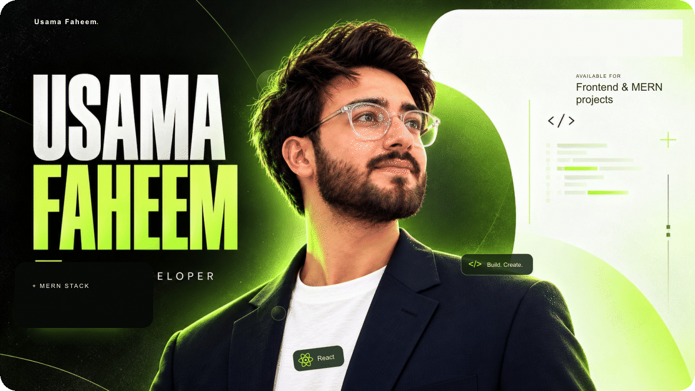
I build interfaces that look good and work well.
I'm Usama Faheem, a frontend-focused MERN stack developer from Lahore, Pakistan. I build responsive websites, animated interfaces and practical web apps with React and Next.js. I also work on the APIs, databases and admin tools behind them.
Open to frontend developer roles and MERN stack internships.
What I build
- Responsive websites and portfolios with React and Next.js.
- Interactive interfaces with Framer Motion, Three.js and React Three Fiber.
- MERN applications, REST APIs, admin panels and AI integration.
My toolkit
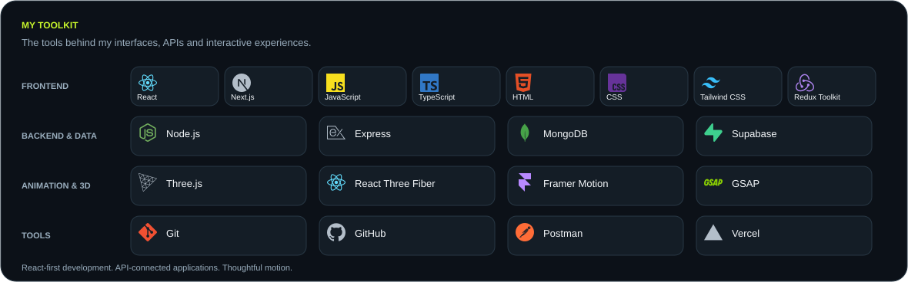
Also: REST APIs · AI Integration · SEO · Accessibility · Cross-browser Compatibility · Performance Tuning
Selected work
|
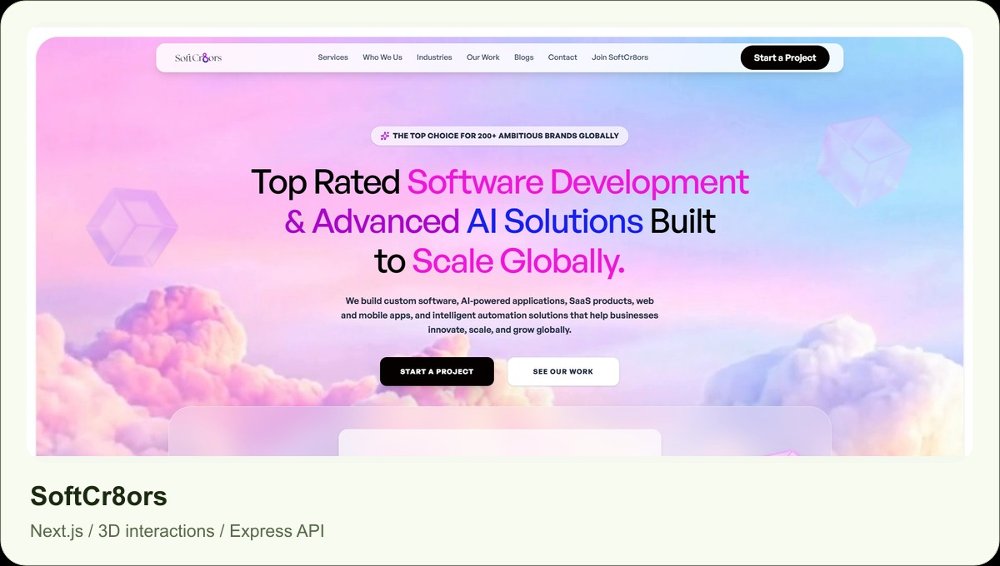 Company services website with responsive sections, 3D interactions and a contact API. Worked on loading speed and animation performance. |
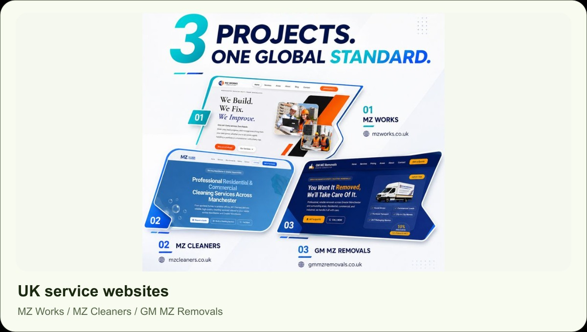 Responsive service and enquiry pages for three UK businesses. Worked on layout, browser compatibility and quote or callback flows. |
|
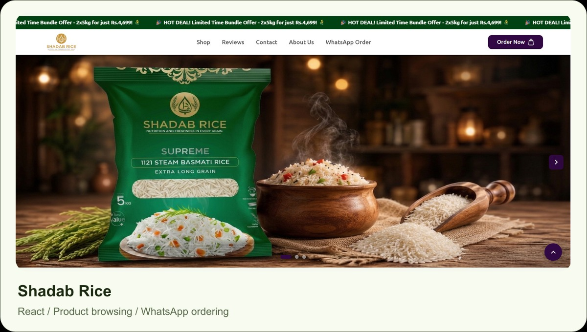 React frontend built during my internship, with product pages, quantity selection, bundle offers and WhatsApp ordering. |
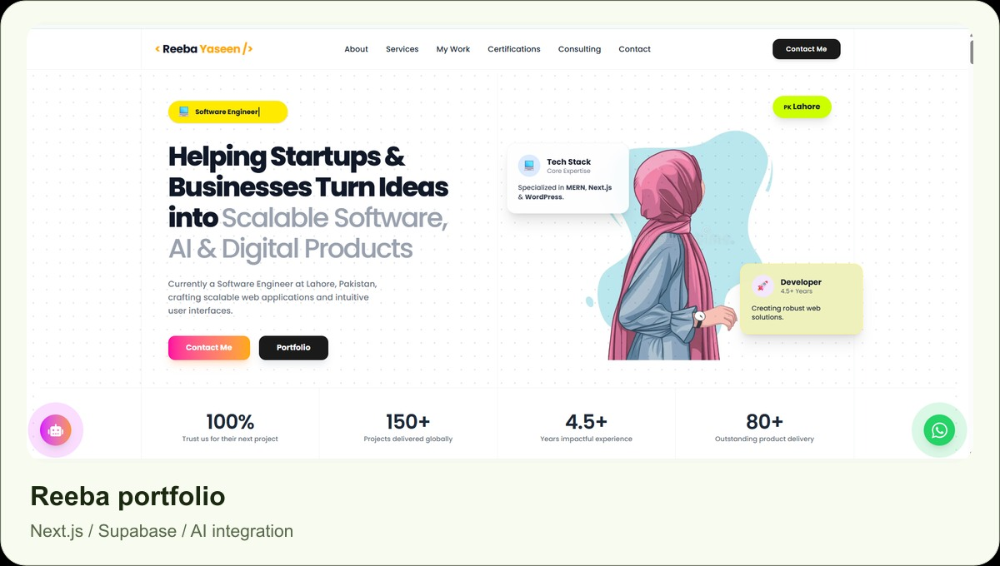 Portfolio with an AI chatbot, enquiry collection and an admin panel for reviewing leads stored in Supabase. |
GitHub in numbers
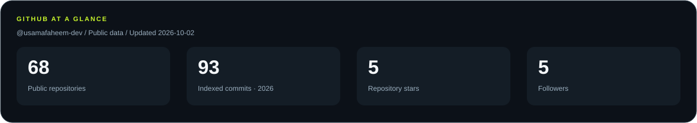
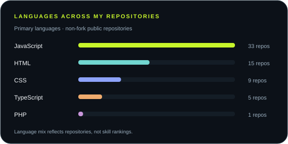 |
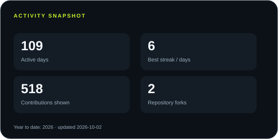 |
Contribution activity
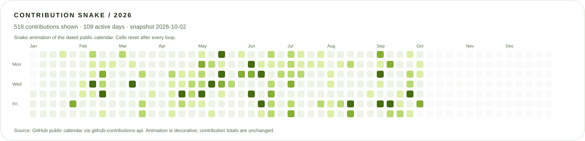
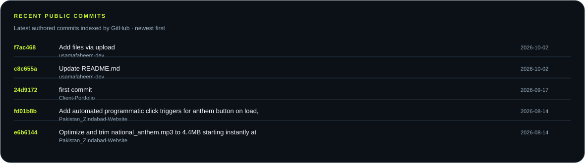
Cards show dated public data and refresh daily when the included GitHub workflow is enabled. Indexed commits are year-to-date public search results, not an all-time or private commit total. Language bars count repositories by their primary language.
Where I've worked
| Company | Role | Dates |
|---|---|---|
| VertexAi Tec | React/Next.js Developer | Feb 2026 to Aug 2026 |
| VertexAi Tec | React.js Intern | Dec 2025 to Feb 2026 |
| SoftCr8ors | Frontend Developer Intern | Apr 2026 to Jul 2026 |
Built client interfaces, reusable components, API-connected pages and interactive experiences. Worked with designers and backend developers, and developed SoftCr8ors' official website with guidance from the CEO.
Education and certifications
- BS Computer Science, lateral entry: Virtual University of Pakistan, March 2026 to March 2028, expected.
- ADP Computer Science: Virtual University of Pakistan, March 2023 to March 2025.
- MERN Stack Development: NeXSkill Institute, October 2024 to May 2025.
- Introduction to Modern AI: Cisco Networking Academy program through GSP Academy, January 11, 2026.
- Full Stack Development with MERN and Freelancing: DigiSkills Training Program, December 2025 to March 2026.
- Build with AI 2025 workshops: DevFest AmplifAI, GDG Cloud Lahore.
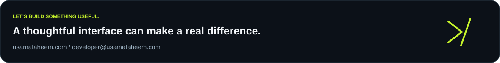